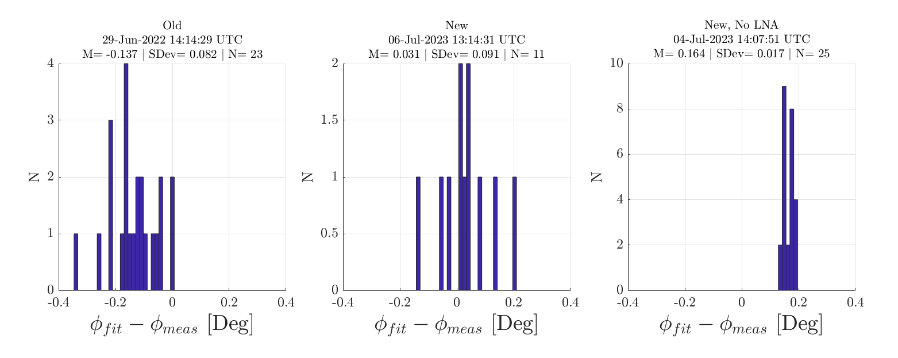
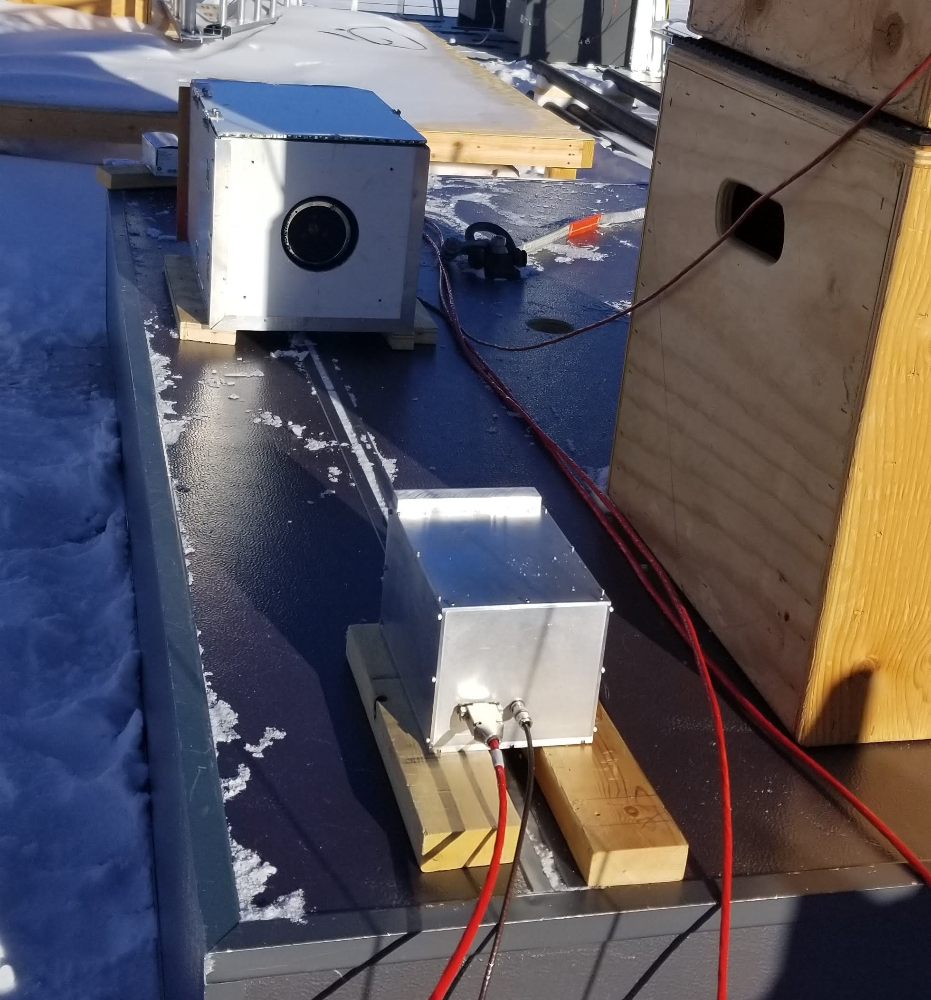
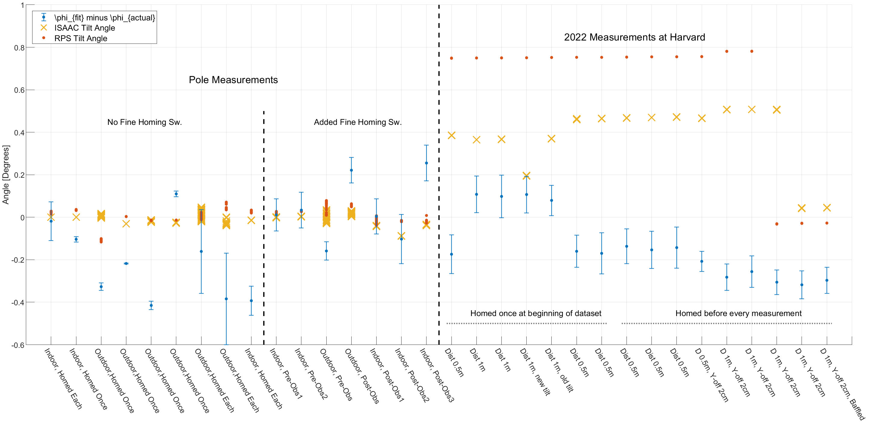
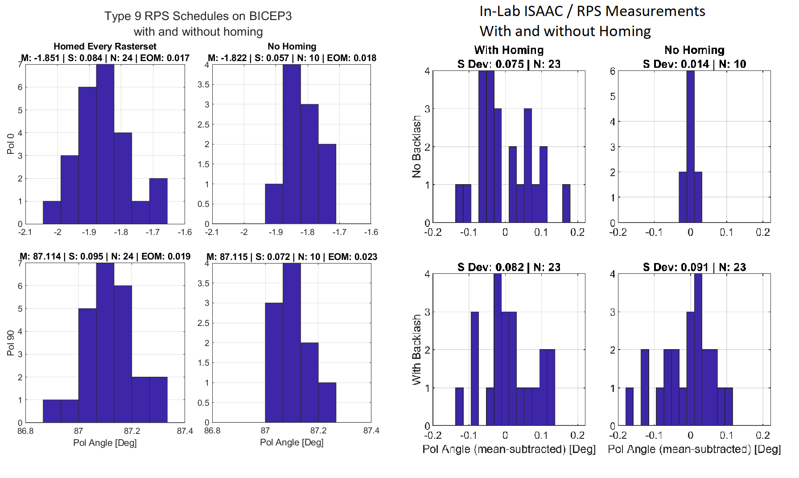

In-Lab Angle Measurements using the RPS and ISAAC (Draft)
—
J. Cornelison, C. Verges, and A. Polish
This goes over the set up of the angle measurements between the ISAAC and RPS both at Pole and here at Harvard. Currently, I can derive the angle of the ISAAC's polarization angle WRT gravity with an accuracy of O(0.2°), the limitations of which I don't fully understand.
That said, I noticed that the repeatability of the in-lab measurements don't improve when homing is turned off and backlash between the gears is present.
I compare in-lab measurements with and without homing to observations of BICEP3 with and without homing.
I find that, while the angle scatter for in-lab measurements doesn't improve when homing is turned off, the scatter on the BICEP3 data does improve when homing is turned off which I believe is evidence that the backlash in the stage had not developed during the RPS observation campaign. See Section 1.2 for more details on this.
In-Lab measurements from this week
Checking ISAAC Noise and Angle Scatter
ISAAC was powered on and saw fluctuations of ~1.5% over 5 minutes in the timestreams. Consistent with measurements from July 2022.
New Lock-In settings:
Input-> Differential -- σA~1.5%
Chop Freq->91Hz; Sync filter-> on; 60&120Hz band filters-> on: σA~1.5%
Switch from ISAAC to lone PacMil diode with 15dB horn -- σA~0.5%
Removing the LNA from the ISAAC. Just a PacMil diode now. -- σA~0.5%.
Adding AN75 to the inside of the ISAAC chassis: σA~0.2%
I added aluminum-backed HR-5 around the horn, but didn't think to added absorber to the interior until now).
Installing RPS and ISAAC on the jig: σA~0.04%
New Lock-In settings: Input-> A only; Ground->Ground
I took new angle measurements with and without the LNA installed, shown in the plot below. Note that of the new measurements, the "No LNA" was taken first and then the LNA was reinstalled and measurements taken again, showing good reproducability of the increased scatter on the angle.

Left: Example distribution from July 2022; Middle: New measurement July 2023 with LNA; Right: After removing LNA and adding eccosorb inside chassis.
Angle Bias Vs. RPS alignment
With the LNA removed from the ISAAC, I conducted some more measurements, rotating the RPS through a range of alignment offsets in Azimuth, shown in Figure 1.2.
Notes:
Measuring alignment: The RPS base plate is secured to the jig by a smaller aluminum adapter plate. With a steel ruler, I calculated the alignment offset by measuring the distance of one of the edges RPS base plate to the edge of the adapter plate at two different locations. The alignment offset is the arctan of the difference of the measurements divided by the separation (6"). After some practice, I was able to get the precision to within 0.01" or ~0.1°.
Each color in the figure represents an independent set of 10 modulation curve measurements.
After setting up the ISAAC, it was not handled in any way throughout the entirety of these measurements.
The RPS and ISAAC were fixed at a distance of ~0.5m.
The RPS was not leveled in the plane of the wire grid -- I found it difficult to maintain level and repeatably change the alignment, so I just opted to not level it.
The ISAAC was leveled to within <0.1° in the plane of its wire grid.
The RPS was held in place using C-clamps.
With Figure 2.2 as a reference, an alignment of <0° has the RPS pointing toward the window.
Notes on the measurement sets in Figure 1.2:
Dist ~0.5m: The first is the one we've already discussed. We went back to the benchtop and confirmed that the point at which we acquired a nearly zero bias was also the location of the peak of the RPS's beam.
Const. Amp: The second set is the same as the first except I moved the RPS forward ever so slightly such that the peak amplitude was constant across all alignment offsets.
Dist ~1.0m: From the first measurement set, we have some indication that optically peaking up the RPS's and ISAAC's beams might improve our accuracy on extracting the correct angle, so I attempted to peak the RPS and ISAAC beams both in Azimuth and Elevation. I had found however that we were already pretty close to the max amplitude (~<1%) for both the RPS and ISAAC and in both directions. Instead, I chose to space them further apart and, making sure they were still peaked-up, take another small set of alignment measurements.
ISAAC Moved: Instead of changing the alignment of the RPS, we instead change the alignment of the ISAAC. The bias changes as a function of alignment, but not as strongly as when we move the RPS. What exactly is this telling us?
Adding Eccosorb: Keeping the RPS and ISAAC fixed in alignment, we add AN-75 eccosorb to various parts jig to test for external reflections being an issue. Each sample corresponds to a single sheet of AN-75 being moved to a different location on the jig -- Annie took pictures which can be found in our CMB@CfA Google Drive folder. If external reflections are an issue, we expect that adding eccosorb will pull the biased angle toward zero so we first made sure that we measured a significant angle bias before we started adding eccosorb.
Flipped ISAAC Horn: Annie and I opened the ISAAC and flipped the RF chain (Horn+Diode) by 180° and took more RPS-alignment measurements at ~1m. Flipping between clicks 3 and 6, the pattern flips pretty cleanly around X=0° which I think is strong evidence that the pattern is following the horn's orientation. This is definitely good motivation to try swapping out the horn on the ISAAC.
15dB Horn: Annie swapped the BICEP1 horn out for an Aerowave 15dB horn.
Flipped 15dB Horn: Annie flipped the horn by 180°.
Translating ISAAC: Annie translated the ISAAC, peaking up (by rotating the ISAAC) at each location
Removed Shroud: Annie removed the RPS shroud and polarizer grid.
Shortly after this test, we learned that Annie had been setting the RPS azimuth angles in a less precise way that did not control for translation of the RPS.
This test will be redone soon (as of 7/19/23) with James's more precise RPS angle setting method.
Removed Shroud pt2: Redo of the above test with the correct RPS angle setting method
Dist ~1.3m: Replaced the RPS grid and moved the RPS and ISAAC as far apart as the current test setup allows, which was 53".
Extra plots: Histograms and mod curve residuals for ISAAC Measurements
Measurement 44 marks the start of the measurements taken in July 2023. 27 to 43 were taken in July 2022. Any before 27 were taken at Pole.
Mod Curve/Residuals: The top plot is the mod curve. The bottom plot compares real residuals to ideal residuals. The Blue line is the real residuals. The Red line is subtracting a mod curve with a fixed angle (the known ISAAC Angle). The Yellow line is a model mod curve at a fixed angle minus another ideal mod curve with with the same input angle plus the measured angle bias seen from the real data. The idea is that Red will agree with Yellow if the bias is truly consistent with the angle changing. Red will agree with Blue if the angle is not significantly contributing to the pattern in the residuals.
Tilts: Tilt meter readout for the RPS and ISAAC for each set of measurements.
Hists: Histograms of the bias. Most of these only have one measurement and aren't particularly useful to look at.
Benchtop Experimental Set Up
Summary:
The wire grid angles WRT to their reference surfaces are measured for both the RPS and ISAAC in the knee mill.
The tilt meters for both the RPS and ISAAC are then calibrated using a Starrett No.96 bubble level.
The RPS and ISAAC are placed at some distance apart facing each other.
The RPS rotates from -180° to 180° usually in 30° increments.
At each commanded angle, the RPS waits 2 seconds before moving to the next angle.
Unlike the measurements on B3, we don't take beam maps with the ISAAC. It is fixed in one position for the duration of the measurement.
The RPS is chopped at 1KHz and the ISAAC is readout by the Lock-In amplifier via pac-mil detector diode. The phase between the reference and ISAAC is zeroed through the lock-in.
The data are recorded via labjack using my raspberry pi. I also record the tilt outputs from both the RPS and ISAAC.
Each measurement comprises 13 sets of 2-second timestreams per command angle. I average over each 2-second timestream to create a modulation curve.
For a single run, I repeat the measurement 25 times.
I fit angles to each of the 25 modulation curves.
The angle between the RPS's electric field and gravity at a given command angle, $\zeta_{comm}$, is given by:
where $\zeta_{grid}$ is the command angle at which the RPS's wire grid is horizontal with its reference surface
and $\zeta_{tilt,RPS}$ is the calibrated readout of the tilt meter.
I define the angle $\phi$ which is the angle measured from the vector that defines "up" WRT gravity to the vector defining the ISAAC's electric field
I estimate $\phi$ using our typical model for a modulation curve:
The ISAAC's tilt meter is installed in the same configuration as the RPS -- the angle between the ISAAC's electric field WRT to gravity (in the same coordinate system) is
The idea here is that, if we've got everything right, then the $\phi$ we fit from the modulation curves should be equal to $\phi_{actual}$ to within uncertainty.
Measurements were taken both at Pole inside MAPO (both on a benchtop and the roof) and at Harvard on a custom alignment jig. The figures below show the setups.

Set up of the RPS-ISAAC measurements on the MAPO roof at Pole.
Set up of the RPS-ISAAC measurements on the jig at Harvard.
The figure below shows the results of the RPS-ISAAC measurements done at Pole before the campaign, before we installed the fine homing switch; after we installed the fine homing switch; after I brought the RPS down; and then when I measured the RPS in the jig at Harvard. The blue dots are distributions of $\phi-\phi_{actual}$, where the dot is the mean and the error bars are the 1σ STD. The angle fit from the modulation curves should be the same as $\phi_{actual}$ within uncertainty. So in the figure, we're expecting all of the blue data points to overlap with zero. I show the tilt of the RPS and the tilt of the ISAAC to show I'm accounting for them correctly.
At Pole, I used the Starrett bubble level to level the RPS and ISAAC before the measurements. At Harvard, I purposefully didn't level them until later to verify that the tilts could properly be accounted for.
When I did level them, I used the same Starrett level I used at Pole (I bring it with me when I deploy).
For the plot below, it might be useful to open it in another window to see things more clearly.

Summary plot of the RPS-ISAAC measurements at Pole and at Harvard. Each blue dot is the mean/std of the
angles estimated from modulation curves minus the actual angle expected of the ISAAC from the tilt/grid
info. Yellow x's are the mean ISAAC tilt angle from a given modulation curve within a dataset. The red
dots are the mean RPS tilt angle from a given modulation curve within a dataset.
Salient information for these data are outlined the section below.
My Conclusions so far
Looking at just the means of measurements (the blue dots in Figure 1.3), my ability to back out the known angle of the ISAAC is accurate to O(0.2°) but it isn't clear to me what the limiting factor is here.
Any minor change to the apparatus results in a significant, repeatable offset to the angle we estimate from the modulation curves.
Things I've thought about:
Tilts: Paying attention to the tilts (red dots/yellow x's), I am able to show that I'm accounting for the tilts correctly.
Multipath: During the very last measurement ("D 1m, BY-ff 2cm, Baffled"), I added eccosorb to the set up and saw no changes which lends evidence that multipath effects are not a significant contributor.
Alignment: I've tried testing the hypothesis that the measurement at this distance is limited by the alignment precision by simulating mod curves with more complex pointing geometry. My model however doesn't predict the offsets we see here.
At any rate, if it is an alignment issue, at least in terms of translation, we expect the effect to decrease as a function of distance and, with the RPS a distance of 200m during normal observation, I expect any bias we see as a result of transformation offsets to be negligible.
That isn't necessarily true, however, azimuthal or elevation misaligment. Fortunately, the tags on the side of the RPS box ensures that azimuthal misalignment keeps us to <0.5°.
For elevation, I admittedly don't have nearly as strong of a prior.
Can we check for evidence of backlash on BICEP3 obs through homing measurements?
Another interesting note is the no-homing vs. homing distributions for the at-Harvard measurements. Specifically, that there's virtually no difference between the two whereas it was very obvious when we weren't homing in earlier measurements when we had no backlash.
I compare distributions of pol angles on BICEP3 with and without homing to check for evidence of backlash occurring during the campaign.
On the last day of the campaign, I took a number of diagnostic measurements, including a set of 10 observations that did not home between measurements.
If backlash developed sometime during the campaign, we should expect to see no difference between the Type 9 observations that homed before every measurement and this dataset without homing.
In the plot below, I show histograms of both the Pol-0 and Pol-90 detectors with- and without homing. We can see that the distribution without homing is roughly 20% smaller than when we are homing.
According to the ISAAC measurements we should expect the difference in scatter between homing on and off to be larger, but I find it plausible that we're simply running up against the intrinsic statistical limit of the measurement on BICEP3.
σφ [Deg]
RX
Homing Off
Homing On
ISAAC (No Backlash)
0.014
0.075
ISAAC (With Backlash)
0.091
0.082
BICEP3 (A/B)
0.057 / 0.072
0.084 / 0.095
Table of angle scatter for ISAAC / BICEP3 measurements with and without homing between measurements.

Histograms from which the Table 1.1 σ's were derived.
Measurement Notes
Notes on the Pole Measurements
Before installing the fine homing switch:
Outdoor, Homed Once: We found very good repeatability when not homing between measurements, even outside. At this time, I was ignoring the fact that the means were non-zero.
Outdoor, Homed Each: When homing each measurement, the homing repeatability got significantly worse.
Indoor, Homed Each: When brought back inside, the homing repeatability appeared to improve.
The measurements here eventually led us to retrofitting the rotation stage with a fine homing switch. For more details on those initial measurements see and a collection of the emails exchanged during that time curated by Clara (RPS Obs Troubleshooting Emails).
In addition to the new homing switch, there were a few more notable changes between this set of measurements and the next set:
We installed a dial on the stepper knob
We installed an additional heater, bolted directly to one side of the rotation stage.
The gears in the rotation stage were degreased and re-greased with low-temp aviation grease.
After installing the fine homing switch:
For all of these datasets, I homed between every measurement. I also ensured the ISAAC and RPS were level WRT gravity using the Starrett bubble level. I realize I should've taken some measurements without homing, but I hadn't thought to do so at the time, it seems.
Indoor, Pre-Obs: The two indoor tests showed reasonable repeatability with means around zero. The setup was unchanged between the two measurements. I also verified that I could not detect any backlash by sight or feel.
Outdoor, Pre-Obs: Before starting the RPS campaign, I performed one last rooftop measurement. The repeatability was still reasonable, but the mean is off by ~-0.1°. My notes show that the knob angle was unchanged throughout this measurement.
A mystery: My notes state that the mean for this measurement was consistent with zero, but this is obviously not the case now. I recall in the last day that I was at Pole, I discovered an issue with the chi-square minimizer I was using, fminsearch, had a bug where it would return values close to the initial guess regardless of what the actual angle was. I recall replacing fminsearch with another minimizer lsqcurvefit resolved this issue. However, I have so far been unable to reproduce my previous results by going back and using fminsearch-- but I've since upgraded my matlab so perhaps this has been fixed. Hard say exactly what happened here.
Outdoor, Post-Obs: When I brought the RPS down, I took 1 outdoor measurement and 3 indoor measurements. My notes are limited here, but I recall verifying that the knob angle was unchanged from before we raised the mast.
Indoor, Post-Obs:
When bringing the RPS back inside, I verified that I was unable to detect any backlash by sight or feel.
The set up for the three indoor measurements were more or less the same except either the RPS or ISAAC was picked up and put back down between taking each measurement set. The distance between the RPS and ISAAC for each measurement was ~1m, I aligned the pointing by eye, and I ensured they were level using the Starrett bubble level.
An important bit of information here is that I had developed a worry that uneven heating of the rotation stage from the extra heater we installed on it might induce a rotation of the grid not captured by the tilt meter. The first of indoor measurements I took occurred while the RPS and ISAAC were still warming up. For the second indoor measurement, I had allowed the RPS to warm up to room temp, but brought the ISAAC back outside and took another measurement while it was still cold. For the third measurement, I did the opposite: while the ISAAC warmed up, I placed the RPS outside and let it cool down, taking another measurement while the stage was still relatively cold. I realized since then that the ΔT required for a rotation of ~0.2° I saw is $\frac{tan(\Delta\theta)}{CTE}=\frac{tan(0.2)}{23\times 10^{-6}}=150K$ where the CTE is aluminum -- not at all realistic -- so what I effectively did was change the alignment from measurement-to-measurement.
Notes on the in-lab measurements at Harvard.
I verified in the RX-lab's Bridgeport that the RPS and ISAAC grid angles were unchanged from the measurements I took in Late December 2021. I did however measure backlash of +0.06° in the rotation stage in March 2023. I verified in October 2023 that the 0.06° backlash was unchanged.
I created an alignment jig here in the lab that allowed me repeat alignment between the RPS/ISAAC to within a few millimeters (see the figure below).
The RPS and ISAAC are both capable of up-down (X)/left-right (Y)/ forward-back (Z) translation.
I also fixed the ISAAC to the spare rotation stage so that I could adjust the azimuthal pointing of the ISAAC more precisely.
Most of these measurements took place in late July 2023.
Initital Alignment: I placed RPS and ISAAC at distance of ~1cm away from each other. I then adjusted the X/Y translation of the ISAAC such that the wire grids which are the same diameter were concentric to within a few millimeters. I minimized the aligment of the two in elevation by leveling them in the Z-direction with a rough bubble level (level within a few degrees). I minimized the azimuthal alignment of the ISAAC by eye by adjusting the spare rotation stage by eye so that the ISAAC was square with the RPS rotation stage.
I took measurements at two distances, 0.5m and 1m.
For the first portion of the data, I took them without homing between each measurement (i.e. I collected 25 modulation curves before homing again). For the second portion, I homed between each modulation curve I collected. We can see that there's virtually no difference between homing and no homing.
For most of the data I collected in the lab, I purposefully didn't level the RPS or ISAAC. However, I did at some point change the tilt of both the RPS and ISAAC to show that angle we get out was unchanged and we are thus accounting for the tilts properly.
For the last few measurements, I offset the ISAAC by a couple centimeters to examine the effect.
For the very last measurement set I collected, I added a bunch of eccosorb around the jig to try and mitigate reflections and saw no significant change.